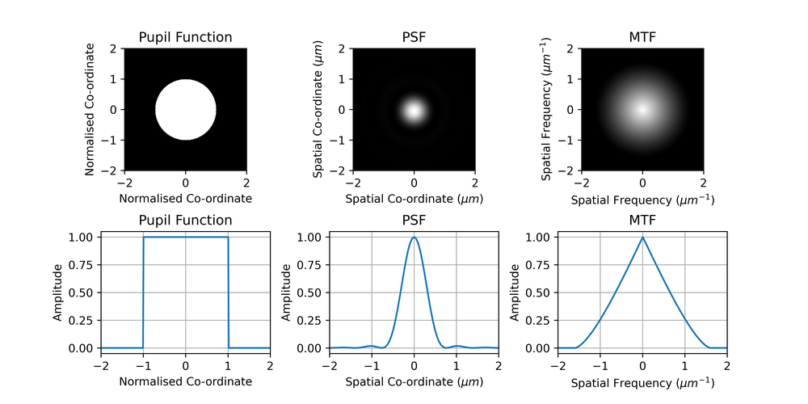
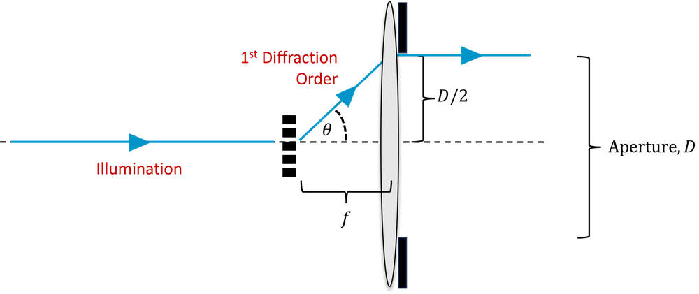
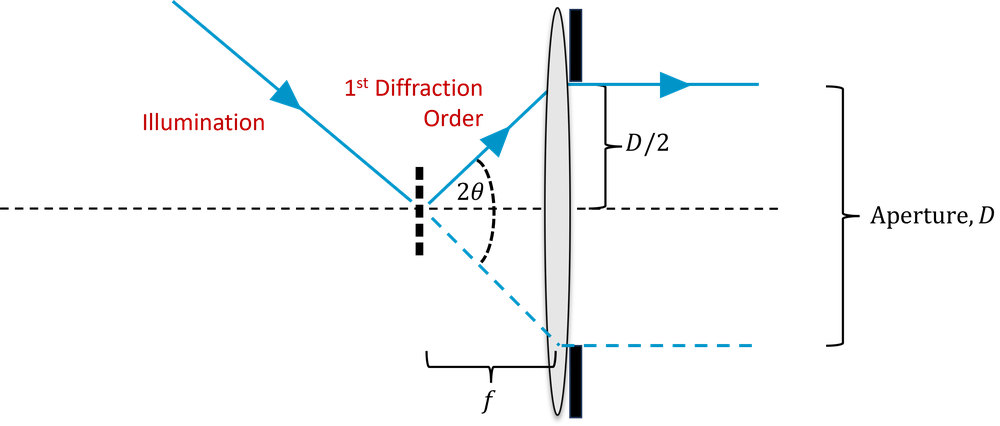
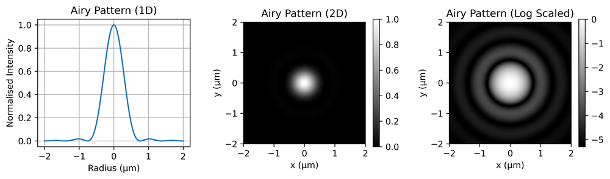
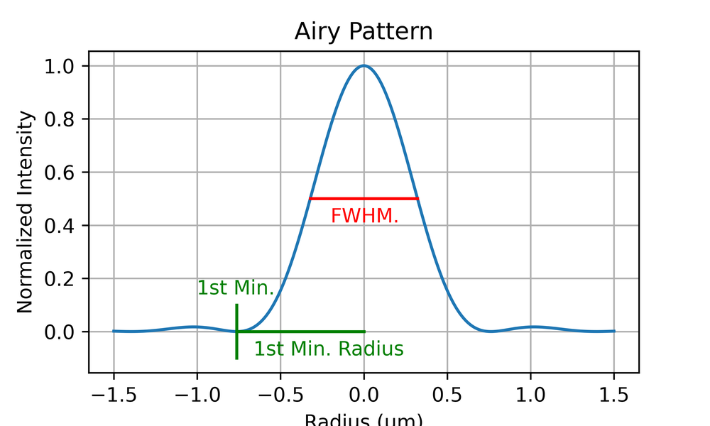
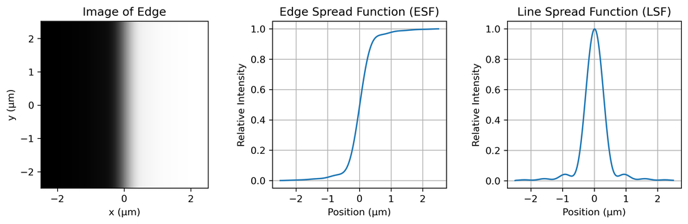
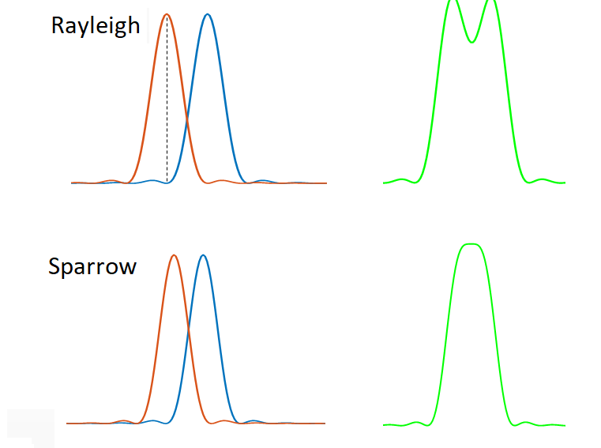
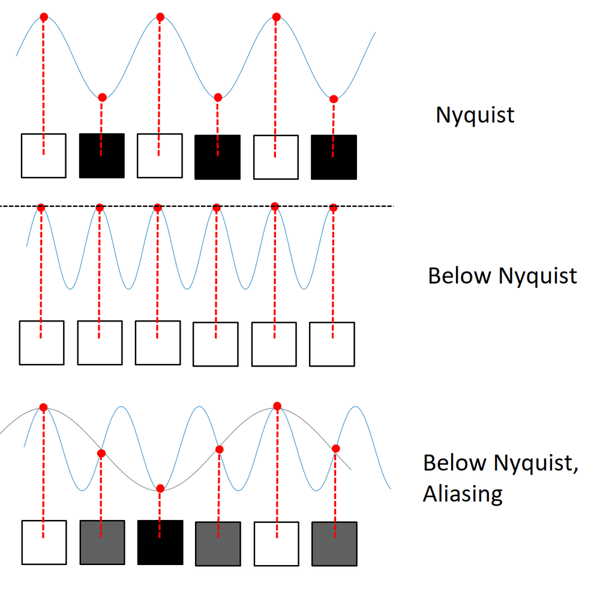

The notes below are a summary of the key points needed for the exam. For more details and background they should be read in conjunction with the additional reading:
In microscopy, resolution refers to the ability of a microscope to distinguish between two points in the sample, i.e. to determine that they are separate and distinct from one another. The closer the points can be before they can no longer be distinguished and they blur into one another, the better the resolution of the microscope. The resolution therefore determines the level of detail that can be observed, essentially how clear and sharp the image appears.
Resolution is distinct from magnification. The magnification is how many times larger the image appears in the eyepiece or on the camera. In a digital microscope we can digitally zoom into the image on screen as well. As we increase the magnification (or the digital zoom) we reach a point where we don’t see any finer details because we have reached the resolution limit. Magnification beyond this point is referred to as empty magnification.
The resolution of a microscope can be characterised by the Point Spread Function (PSF). This describes how a single point on the sample is transferred to the image. In an ideal optical system, a point object would appear as a single, perfectly sharp point in the image. However, due to the wave nature of light and imperfections in the optical system, that point becomes a blurred spot. The 2D distribution of intensity in this blurred spot is the PSF.
The PSF is particularly useful because we can consider any object to be a collection, or sum, of a large number of points. The image is therefore a sum of the PSF from each of those points.
Consider an object \(O(u,v)\), where \(u\) and \(v\) are the lateral co-ordinates at the object plane. For some perfect (and physically impossible) imaging system (i.e. one which exactly reproduces the object), we can write the image \(I(x,y)\) as
\[I(x,y) = \int \int O(u,v) \delta(x - u, y - v)~du~dv,\]
where \(\delta\) is the delta function. We haven’t explicitly included the magnification factor, but since we have used different co-ordinates for \(I\) and \(O\) (\(x,y\) and \(u,v\)) we can accommodate any magnification implicitly.
For any real system we replace this delta function with a finite point spread function \(\mathrm{PSF}(x_i,y_i)\), and the image is then similarly given by:
\[I(x,y) = \int \int O(u,v) \mathrm{PSF}(x - u, y - v)~du~dv\]
or,
\[I(x,y)= O(u,v) \ast \mathrm{PSF},\]
where \(\ast\) represents convolution.
In the spatial frequency domain, the analogue of the PSF is the modulation transfer function, MTF (i.e. the 2D MTF is the 2D Fourier transform of the 2D PSF).
Recall from Fourier theory that a convolution in the spatial domain is equivalent to a multiplication in the spatial frequency domain. The MTF can be thought of a weighting function by which we attenuate each spatial frequency (i.e. it is a function telling us what fraction of each frequency of modulation the system is able to transfer.).
We also define the optical transfer function (OTF). This contains the same information as the MTF but also describes the phase delay that different spatial frequency components receive. Usually the OTF is expressed as a complex number, and the MTF is then the magnitude/modulus of the OTF,
\[\mathrm{MTF} = | \mathrm{OTF} |\]
We further define the pupil function, which tells us how the amplitude of light passing through different points of the aperture of the microscope is attenuated (as well as any phase change). For an ideal microscope with a circular aperture, this is just a circle.
The pupil plane is a Fourier plane with respect to the object plane. So we can think of this as effectively a ‘spatial frequency plane’, the size of the pupil determines the cut-off spatial frequency (refer to the discussion earlier).
For incoherent imaging, such as with light from a lamp or fluorescence imaging, the PSF is the absolute square of the Fourier transform of the pupil function, \(P\). This means, from Fourier theory, that the OTF is the autocorrelation of the pupil function, and the MTF is the magnitude of this,
\[\mathrm{PSF} = |\mathcal{F}(P)|^2\]
\[\mathrm{MTF} = |P \ast P|\]
This is a slightly confusing point and requires some thought.
An example of a pupil function and the corresponding PSF and MTF are shown in Fig. 1. We can see from the MTF plot that a microscope is a low-pass filtering system with a cut-off frequency.
Aside: Some caution is needed here, these are slices through 2D functions, not 1D functions. The slice through the MTF is not simply the autocorrelation of the slice through the pupil function, we must perform the 2D autocorrelation on the 2D pupil function and then take the slice. Otherwise the MTF would be a triangular function (the autocorrelation of a ‘rect’ function) whereas careful observation will reveal a slight curvature.

A final, non-examinable, subtlety is that, again, a 1D slice through the 2D MTF is NOT the 1D Fourier transform of a 1D profile through the 2D PSF (You may need to convince yourself this is the case). The 1D Fourier transform of the MTF is actually the line spread function (LSF), which describes how a line, rather than a point, spreads. It is related to the PSF via the Abel transform. An excellent tutorial discussing this is available here:
https://www.dspguide.com/ch25/1.htm
The finite resolution of a microscope can be understood in terms of the spatial frequencies which are passed from the object to the image plane (i.e. the MTF). Roughly speaking, to reconstruct a feature of a certain small size, our microscope must transmit spatial frequencies on the order of the feature’s size.
To understand what happens to a given spatial frequency, consider a fine sinusoidal periodic structure in the object, as shown in Fig. 2. The structures are separated by a distance \(d\) and so have spatial frequency \(1/d\). This structure acts like a diffraction grating, and hence if we consider only the first diffraction order, normally incident light of wavelength \(\lambda\) will be diffracted by an angle \(\theta\), where:
\[d \sin \theta = \lambda\]

In order to capture a spatial frequency of \(1/d\), our lens must collect light diffracted at an angle \(\theta\). If the lens is at a focal length of \(f\), then it must have an aperture diameter, \(D\), such that,
\[\frac{D}{2f} \approx \sin \theta,\]
where we have made the small angle approximation, \(\sin \theta \approx \theta\).
We define the numerical aperture of our microscope objective as,
\[\mathrm{NA} = n \sin \theta \approx nD / 2f,\]
where \(n\) is the refractive index of the medium between the sample and the objective. In general this is air, and so \(n = 1\), but in oil immersion objectives it can be higher.
Hence, for our microscope to capture a spatial frequency \(1/d\), and resolve objects of size \(d\), we have,
\[d = \frac{n\lambda}{\mathrm{NA}}.\]
However, this assumes we illuminate the sample with plane waves. Say now we illuminate from all angles using a condenser with the same NA as the objective. Now, as shown in Fig 3, we can collect spatial frequencies which have been diffracted through \(2 \theta\), and hence which are twice as high. So our final formula becomes,
\[d_{abbe} = \frac{\lambda}{2\mathrm{NA}}.\]

This is known as the Abbe limit; it tells us the maximum spatial frequency we can collect, known as the cut-off frequency. Alternatively it tells us the objective NA we require in order to capture features with a certain spatial frequency. It does not necessarily mean that we can resolve features of that size in practice, for that we need to look at the PSF/MTF, and also consider how noisy the image is. It also does not correspond exactly to either the Rayleigh or Sparrow criteria.
In the example of Fig. 1, the NA was 0.4 and the wavelength 500 nm, and so the predicted cut-off spatial frequency (Abbe limit) can be calculated as \(1.6\, \mathrm{\mu m^{-1}}\). We can see that the MTF does indeed go to zero at this spatial frequency.
For a perfect, diffraction-limited objective, the corresponding PSF is an Airy pattern. This is shown in Fig. 4, with the left panel showing a 1D slice through the disc, the centre showing the full 2D pattern and the right showing a log-scaled pattern to make the ringing (circular patterns) clearer.

This is in fact the 2D Fourier transform of a circular aperture, as discussed above. Mathematically it is given by,
\[I = I_0\Big[\frac{2J_1(kr)}{kr}\Big]^2,\]
where \(I_0\) is the maximum intensity at the centre of the pattern, \(J_1\) is a 1st order Bessel function of the first kind, \(k\) is the wavenumber (\(2\pi/\lambda\)) and \(r\) is the radial co-ordinate. The first minimum occurs at a distance of,
\[r = 0.61 \lambda/NA.\]
The central disc inside this radius is called the Airy disc.
One way to characterise the PSF is with the full-width half maximum (FWHM). This is the width of the PSF at half of its maximum height, as shown in Fig. 5.

For the Airy disc, the FWHM is similar to the resolution as defined by the Rayleigh criteria (around 85% of it, in fact). A convenient way to characterise the resolution of a microscope is therefore to plot the PSF and measure the FWHM, as this is easier to do than to identify the first minimum of the Airy disc (which may be lost in noise). However, this does not capture any information about the shape of the PSF, which will vary due to optical imperfections in the microscope.
Remember also that the PSF is really a 2D function and again, for an imperfect microscope, may not be exactly radially symmetrical. We could choose to measure the FWHM for two perpendicular directions, or take a radial average.
The PSF can be measured experimentally by imaging a small spherical object, such as a plastic micro-bead, which is much smaller than the resolution of the system. This approximates a point object, and so the image is simply the PSF. Alternatively, if such a small bead cannot be imaged, an image of a larger bead of a known size can be imaged, and the image deconvolved by the known shape of the bead to obtain the PSF.
Yet another method is known as edge-imaging. If we image a sharp edge and take a profile across the edge, differentiation yields what is known as the line spread function (LSF). This is not exactly equal to the PSF (a profile across a line is not the same as the profile across a point), but there is a simple mathematical relationship between the two for a radially symmetric PSF, called the Abel transform. To avoid the camera pixel grid interfering with this measurement, the edge is usually slanted with respect to the grid, and the LSF is built up from multiple measurements at different positions along the edge.

You are not expected to know all the details of these measurement, or do these calculations in the exam (they require a computer in any case) but you should understand the basic idea.
The incoherent point spread function is an intensity point spread function, i.e. it allows the intensity value at the camera plane to be written in terms of the intensity values at the object plane. This is possible because an incoherent microscope is linear in intensity.
We cannot rigorously define an intensity point spread function for a coherent imaging system (e.g. microscopy with a laser) due to the presence of interference. A coherent microscope is linear in electric field, not the intensity. The image therefore depends on the phase of the object.
Instead of the incoherent PSF we must define an amplitude point spread function, also known as the coherent point spread function or cPSF, which acts on the complex electric field. Once we have convolved the (complex) object with this amplitude point spread function we can then take the square modulus to determine the resulting intensity on the camera. Note that this is emphatically not the same as convolving the object plane intensity with the square of the amplitude PSF.
In practice, these details are often ignored, even in academic publications, which has led to some confusion. A detailed (and excellent) discussion on this and the ways we can define resolution for coherent imaging systems was published in Nature Photonics in 2016. :
https://www.nature.com/articles/nphoton.2015.279
This section is not required for the exam.
We can characterise the resolution of microscope using the PSF or MTF, but these are functions that we would have to plot. Often we want to quote a single number as the resolution. However, resolution as a single number is not unambiguously defined. Informally, it is usually taken to mean the ability to tell whether two point objects are actually two separate objects, but in practice this depends on things other than the PSF/MTF of the microscope (such as noise levels). To quantify resolution we therefore require a formal definition of when two points can be resolved. These are illustrated in Fig 7.
The Rayleigh criterion states that two points can be distinguished when the peak of the Airy pattern from one of the points is aligned with the first minimum of the Airy pattern from the second. For an ideal microscope with a circular aperture, this comes out to be:
\[\begin{equation} d_{Rayleigh} = 0.61 \frac{\lambda}{NA} \end{equation}\]
The Sparrow criterion, says instead that the two objects can be resolved when the sum of their intensity patterns no longer has a dip (see diagram). This occurs at
\[d_{Sparrow} = 0.47 \frac{\lambda}{\mathrm{NA}}\]

So, the Sparrow limit gives a smaller (better) value for resolution than either the Rayleigh or Abbe limits. In all cases, the rule of thumb is that the resolution is on the order of \(\lambda /2NA\).
All the resolution considerations above do not affect our choice of magnification. However, when a pixelated detector, such as a camera is used, we must also consider the effect of the pixelation on the resolution. Let’s define:
Pixel pitch: The spacing between the centres of the pixels.
Pixel size: The size of the active area of the pixel.
The fill factor: Ratio of the pixel size to the pixel pitch.
From the point of view of sampling theory, it is the pixel pitch which matters most (and in most cases the fill factor is close to 1, so the size and pitch are similar).
Nyquist theory tells us that the sampling pitch must be half the spacing corresponding to the highest spatial frequency in order to sample that frequency without aliasing. (Or equivalently, the sampling frequency must be twice the maximum spatial frequency we wish to sample.)
This does not trivially relate to the resolution criteria defined above, but the common rule of thumb is to assume we require a pixel pitch which is half the diffraction limited resolution as magnified onto the camera. For example, suppose our resolution is 1 μm and we have a 40X magnification onto the camera. Each 1 μm resolution element therefore has a size of 40 μm on the camera. We then require a pixel pitch of less than 20 μm.
In practice, cameras come with certain pixel sizes, and so you may instead need to match the magnification to the camera pixel size.
Aside: There is a secondary effect of the pixel size, due to the fact that each pixel integrates over an area. This reduces the contrast of higher spatial frequencies, and so may reduce the signal to noise ratio for the spatial frequencies to such a point that they cannot be observed in practice, but this is distinct from the sampling theory. For a fill-factor of 1, this results in around a 35% loss in contrast at the Nyquist frequency.
In the (usually avoided) case where the pixel pitch is too large to sample the highest spatial frequency reaching the camera, then the resolution is pixel-limited. Pixel limited resolution is shift variant - the ability to resolve two objects depends somewhat on their position relative to the pixel grid. So we cannot define a shift invariant point spread function or define an unambiguous MTF.

You should be able to:
Explain the meaning of resolution in microscopy.
Explain the meaning of the PSF, MTF and Pupil Functions, sketching examples, and explain how they are related.
Understand the basics of how the PSF is measured experimentally.
Explain how the the FWHM of the PSF is measured and understand its significance in terms of resolution.
Calculate the diffraction-limited spatial frequency and resolution of a microscope based on the NA and wavelength.
Describe and use the Rayleigh and Sparrow criteria for resolution.
Sketch and explain the Airy disc and explain how the zero-crossings relate to diffraction-limited resolution.
Calculate the pixel-limited spatial frequency and resolution.
Calculate the magnification required to match the pixel-limited resolution to the diffraction-limited resolution.